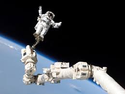

На пути к звездам ... ( история космонавтики Планеты Земля )

По материалам книги Антона Ивановича Первушина" Битва за звезды. "
А также из других источников Интернет
Уважаемый Читатель - после ознакомления с Книгой
рекомендую Вам заказать ее бумажное издание.
Перед вами книга, рассказывающая об одном из главных достижений XX века — космонавтике, которую весь мир считает символом прошлого столетия. Однако космонавтика стала не только областью современнейших исследований науки и достижений техники, но и полем битвы за космос двух мировых сверхдержав — СССР и США. Гонка вооружений, «холодная война» подталкивали ученых противоборствующих систем создавать все новые фантастические проекты, опережающие реальность. Данный том посвящен ракетным системам докосмической эры. Книга содержит большой иллюстративный материал и будет интересна как специалистам, так и любителям истории.
Однако космонавтика стала не только областью современнейших исследований науки и достижений техники, но и полем битвы за космос двух мировых сверхдержав — СССР и США. Гонка вооружений, «холодная война» подталкивали ученых противоборствующих систем создавать все новые фантастические проекты, опережающие реальность
Однако космонавтика стала не только областью современнейших исследований науки и достижений техники, но и полем битвы за космос двух мировых сверхдержав — СССР и США. Гонка вооружений, «холодная война» подталкивали ученых противоборствующих систем создавать все новые фантастические проекты, опережающие реальность
Ракетные системы докосмической эры.
- От автора. Введение.
- Вместо предисловия - Битва, которой не было.
- Глава 1. Космические корабли докосмической эры.
- К вопросу о границах космоса.
- Из пушки — на Луну.
- Космические метательные машины.
- Космические аэростаты и дирижабли.
- Экран тяготения.
- Лучевые межпланетные корабли.
- Электрические межпланетные корабли.
- Электронные межпланетные корабли.
- Межпланетные радиокорабли.
- Ракетные войска императора.
- Аэропланы с ракетными двигателями.
- Межпланетные ракетные корабли.
- Глава 2. Третий космический рейх.
- Легенда о первом немецком космонавте.
- «Немецкое ракетное общество».
- Ракеты Германа Оберта.
- Ракетопланы Макса Валье.
- «Пороховая башня» Гомана.
- Ракеты Франца фон Гефта.
- Опыты с «ракетными» самолетами.
- Ракеты для «лунной женщины».
- «Ракетенфлюгплатц».
- История Пенемюнде.
- Реальность программы «Фау».
- Пилотируемые ракеты Третьего рейха.
- Межконтинентальные ракеты Третьего рейха.
- Космическая пушка Гвидо фон Пирке и проект «Фау-3».
- Ракетопланы фирмы «Хейнкель».
- Ракетопланы Института планеризма.
- Ракетопланы фирмы «Мессершмитт».
- Конкурсные ракетопланы.
- Космические бомбардировщики Эйгена Зенгера.
- Летающие диски Третьего рейха.
- Альтернатива-1: Космический рейх.
- Глава 3 Ракеты и ракетопланы Советской России.
- «Воздухоплавательный прибор» Кибальчича.
- Летательные аппараты Неждановского.
- Ракета Александра Федорова.
- Ракеты и ракетные поезда Константина Циолковского.
- Ракетопланы Фридриха Цандера.
- Двигатели Цандера класса «ОР».
- Межпланетные корабли Юрия Кондратюка.
- ГДЛ: укротители огня.
- Ракетоплан «РП-1» («Имени XIV годовщины Октября»).
- Ракеты Михаила Тихонравова.
- Крылатые ракеты РНИИ.
- Ракетоплан «РП-318».
- Самолет с ракетным двигателем «БИ-1».
- Истребитель-перехватчик «302».
- Истребитель с ракетным двигателем «Малютка».
- Реактивные истребители Бартини.
- Самолет-перехватчик «РП».
- Реактивные бомбардировщики «Пе-2».
- Реактивный истребитель «ВИ».
- Летающая лаборатория «Ц-1» («ЛЛ-1»).
- Истребитель-перехватчик «И-270».
- Сверхзвуковые самолеты серии «346».
- Сверхзвуковой истребитель «486».
- Самолет «5».
- Альтернатива-2: Аэрокосмические войска для товарища Сталина.
- Глава 4. Гонка за лидером.
- «Эффект разорвавшейся бомбы».
- Космический иллюзион.
- Ракеты и патенты Роберта Годдарда.
- «Американское ракетное общество» и проект «ORDICIT».
- «WAC–Corporal»: полет в историю.
- «Viking», «Aerobee» и другие ракеты.
- Проект «Bumper».
- «Redstone» на старте.
- Искусственный спутник Земли и проект «RAND».
- Спутник Фрэда Зингера «MOUSE».
- Проект «Orbiter».
- Метаморфозы программы «Vanguard».
- Спутник «Explorer-1».
- Глава 5. К вопросу о первенстве.
- Глава 6. Он сказал: «ПОЕХАЛИ!».
- Глава 7. Мезосферные войны.
- «Вбомбить в каменный век!».
- Итоги войны в Корее.
- Проект «ЭКР» («Экспериментальная крылатая ракета»).
- Самолеты-снаряды «Navaho», «Snark», «Regulus II».
- «Буря» против «Navaho».
- Проект «Буран».
- Сверхзвуковой бомбардировщик «ХВ-70 Valkyria».
- Проект «А-12» («BlackBird»).
- Самолет-разведчик «SR-71».
- Сверхзвуковые тяжелые самолеты Владимира Мясищева.
- Сверхзвуковые тяжелые самолеты Андрея Туполева.
- Сверхзвуковой высотный ракетоносец «Т-4» («Сотка»).
- Глава 8. Крылатые корабли Америки.
- Экспериментальный ракетоплан «Х-1».
- Экспериментальный ракетоплан «Х-2».
- Крылатая пассажирская ракета доктора Цзяна Сюсэня.
- Ракетный корабль Дорнбергера и проект «Bo-Mi».
- «Система 118Р», «Brass Bell» и «RoBo».
- Программа «HYWARDS».
- Гиперзвуковой самолет «Х-15».
- Проект крылатого космического корабля «Dyna-Soar».
- Разработка и испытания «Х-20».
- Крылатые космические корабли «М-2» и «HL-10».
- Космический челнок «SV-5» («Х-24»).
- Воздушно-космический аппарат «Scramjet».
- Крылатые космические системы «Saturn».
- Проект NASA двухступенчатого космического корабля.
- Проект «Astrorocket».
- Проект «Astro».
- Другие проекты двухступенчатых космических кораблей.
- Астроплан.
- Космический корабль «Janus».
- Глава 9. Космопланы Советского Союза.
- Самолеты-снаряды «Ту-121» («С») «Ту-123» («Д»).
- Разведывательный самолет «Ту-123» («Ястреб»).
- Ударный беспилотный планирующий самолет «Ту130».
- Пилотируемый космоплан «Ту-136» («Звезда»).
- Планирующий космический аппарат Цыбина («Лапоток»).
- Самолет-снаряд «М-44».
- Воздушно-космические аппараты Мясищева.
- Ракетопланы «МП-1» и «Р».
- Авиационно-космическая система «Спираль».
- Изделие «105.11» («Лапоть»).
- Испытания воздушно-космических моделей «БОР».
- Полеты «БОР-5».
- Глава 10. Битва за Луну.
- Несостоявшиеся похороны, или Были ли американцы на Луне?.
- Программа «Lunex».
- Забытые проекты программы «Apollo».
- Лунные корабли серии «Gemini».
- Программа облета Луны «7К-Л1».
- Ракетно-космическая система «Н1-ЛЗ».
- Ракета-носитель «Н-1»: история катастроф.
- Жертвы космической гонки.
- Полеты «Зондов».
- Испытания лунного корабля «ЛЗ».
- Лунная программа «УР-700-ЛК-700» Владимира Челомея.
- Проект «Н1-ЛЗМ» Василия Мишина.
- Программа «ЛЭК» Валентина Глушко.
- Альтернатива-5: Русские на Луне.
- Глава 11. Лунные базы.
- Глава 12. На пути к Марсу.
- Глава 13. Истребители спутников.
- Слово и дело.
- Ударные системы космического базирования.
- Проект «Глобальная ракета».
- Проект «Р-36» (Системы частично-орбитальной бомбардировки).
- Ядерные взрывы в космосе.
- Орбитальный перехват.
- Космонавты идут на абордаж.
- Проект «SAINT».
- Программа «ASAT».
- Противоспутниковый комплекс «МиГ-31Д».
- Программа «Истребитель спутников».
- Полеты «Полетов».
- Дальнейшие испытания по программе «Истребитель спутников».
- Глава 14. «Буран» против «Спейс Шаттлв».
- Глава 15. Наследники «БУРАНА».
- Легкий космический самолет Челомея.
- Проект «ОК-М».
- Проект «МАКС».
- Космопланы «МиГ-2000» и «МиГ-АКС».
- Воздушно-космический самолет НПО «Энергия».
- Космический бомбардировщик «Ту-2000».
- Концепция «Аякс».
- Одноступенчатый воздушно-космический самолет «Нева».
- Космический корабль «Заря».
- Двухмодульный воздушно-космический корабль.
- Программа «Холод».
- Ракетоплан «АРС» («Аэро-космическое ралли»).
- Суборбитальный корабль «Космополис-XXI».
- Глава 16. Наследники «ШАТТЛА».
- Глава 17. ОРБИТАЛЬНЫЕ ГОРОДА.
- Звезда по имени КЭЦ.
- «Межпланетные» станции Оберта.
- «Жилое колесо» Нордунга.
- Орбитальная станция Вернера фон Брауна.
- Американские орбитальные станции.
- Орбитальная станция «Freedom».
- «ТОС» Сергея Королева.
- Экспериментальная космическая станция «Союз».
- Военно-космическая станция «Алмаз».
- Полеты «Алмазов» и «ТКС».
- Боевые орбитальные комплексы для «Бурана».
- Боевой орбитальный комплекс «Скиф-ДМ».
- Орбитальная станция «Мир-2».
- Орбитальные станции «Надежда» и «Русь».
- Европейский проект орбитальной станции.
- Космический туризм.
- Орбитальные города О'Нейла.
- Астроинженерные сооружения.
- Глава 18. «Звездные войны».
- Глава 19. Проблема тяги.
- Глава 20. Космическая артиллерия.
- Глава 21. В космос — на лифте.
- Глава 22. Межзвездные экспедиции.
- Глава 23. Непокорная планета.
- На пути к звездам. Несколько слов в заключение.
- На пути к звездам. Приложение I. Понятия.
- На пути к звездам. Приложение II. Список сокращений.
- На пути к звездам. Приложение III. Список литературы.
- На пути к звездам. Приложение IV. Сетевые ресурсы.
Космическое противостояние .